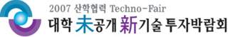

ecl news & announcements
Our laboratory participates in the Industry Academic Cooperation Techno-Fair
2007 산학협력 Techno-Fair 대학 미공개 신기술 투자박람회 참여
우리 연구실에서 출원한 특허 "다중 마커 추적의 정확도 향상을 통한 증강현실 공간의 제공 방법 및 장치"의 기술이전 및 사업화 홍보를 위하여 "2007 techno-fair 대학 미공개 신기술 투자박람회"에 참여합니다. 본 특허 기술은 다중 마커를 사용하여 카메라의 움직임을 추적함으로써 넓은 공간에서의 사용자의 움직임을 추적하는 기술입니다.

2007년 특허출원 된 미공개 신기술을 기업으로 이전하여 기술사업화를 도모하고자
“2007 산학협력 Techno-Fair 대학 미공개 신기술 투자박람회”가 다음과 같이 개최됩니다.
가. 일시: 2007.10.24(수) ~ 10.25(목)
나. 장소: aT센터 3층 전시장(서울 양재동 소재)
다. 주최: 국가균형발전위원회, 교육인적자원부, 산업자원부
라. 주관: 2007 산학협력 Techno-Fair 조직위원회
마. 행사내용
- 전국 42개 대학 3,000여개 미공개 신기술 공개 및 투자 상담
- 엄선된 101개 신기술 설명회
- 기술금융지원 설명회 및 상담 등
※ 자세한 사항은 행사공식 홈페이지(www.technofair.net) 참조
동 박람회에서는 국내 최초 42개 대학이 특허출원한 3,000여건의 기술에 대한 투자상담을 실시할 예정이며, 아울러 참가기업을 대상으로 금융기관의 기술금융지원 상담을 현장에서 진행할 예정으로 있으니 회원업체의 많은 참여 바랍니다.
»
Technology:
Method and Device of Robust Multiple Marker Tracking for Interactive Augmented Reality Space
»
Summary:
The system provides an interactive augmented reality implementation using a reliable and robust multiple marker tracking method. The system contains a real-time image frame acquisition device, a marker registration device for multiple marker tracking, a multi-marker fusion device for computing reliable and representing transformation, a transformation compensation device for removing vibration of projection matrix using a history buffer, a projection matrix computation device to compute the rendering projection matrix from compensated motion parameters, and a display device to render intractable augmented space using the projection matrix.
»
Effect:
Using the method, developers can implement more immersive augmented reality space using multiple markers. The system gives wider and more accurate tracking results over previous marker or pattern tracking methods. The registration of real space and virtual space is more coincident and the system generates well-composed frames.
Entertainment Computing Laboratory